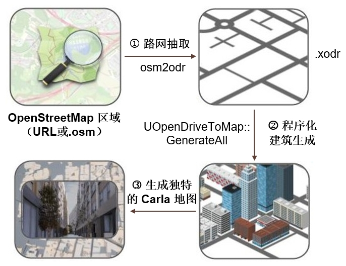

How to add a new sensor
This tutorial explains the basics for adding a new sensor to Carla. It provides the necessary steps to implement a sensor in Unreal Engine 4 (UE4) and expose its data via Carla's Python API. We'll follow all the steps by creating a new sensor as an example.
Prerequisites
In order to implement a new sensor, you'll need to compile Carla source code, for detailed instructions on how to achieve this see Building from source.
This tutorial also assumes the reader is fluent in C++ programming.
Introduction
Sensors in Carla are a special type of actor that produce a stream of data. Some sensors produce data continuously, every time the sensor is updated, other produce data only after certain events. For instance, a camera produces an image on every update, but a collision sensor is only triggered in the event of a collision.
Although most sensors compute their measurements in the server side (UE4), it's worth noticing that some sensors run in the client-side only. An example of such sensor is the LaneInvasion, it notifies every time a lane mark has been crossed. For further details see Appendix: Client-side sensors.
In this tutorial, we'll be focusing on server-side sensors.
In order to have a sensor running inside UE4 sending data all the way to a Python client, we need to cover the whole communication pipeline.

Thus we'll need the following classes covering the different steps of the pipeline
-
Sensor actor
Actor in charge of measuring and/or simulating data. Running in Carla plugin using UE4 framework. Accessible by the user as Sensor actor. -
Serializer
Object containing methods for serializing and deserializing the data generated by the sensor. Running in LibCarla, both server and client. -
Sensor data
Object representing the data generated by the sensor. This is the object that will be passed to the final user, both in C++ and Python APIs.
Note
To ensure best performance, sensors are registered and dispatched using a sort of "compile-time plugin system" based on template meta-programming. Most likely, the code won't compile until all the pieces are present.
Creating a new sensor
We're going to create a sensor that detects other actors around our vehicle. For that we'll create a trigger box that detects objects within, and we'll be reporting status to the client every time a vehicle is inside our trigger box. Let's call it Safe Distance Sensor.

For the sake of simplicity we're not going to take into account all the edge cases, nor it will be implemented in the most efficient way. This is just an illustrative example.
1- Sensor actor
This is the most complicated class we're going to create. Here we're running inside Unreal Engine framework, knowledge of UE4 API will be very helpful but not indispensable, we'll assume the reader has never worked with UE4 before.
Inside UE4, we have a similar hierarchy as we have in the client-side, ASensor
derives from AActor, and an actor is roughly any object that can be dropped
into the world. AActor has a virtual function called Tick that we can use to
update our sensor on every simulator update. Higher in the hierarchy we have
UObject, base class for most of UE4 classes. It is important to know that
objects deriving from UObject are handle via pointers and are garbage
collected when they're no longer referenced. Class members pointing to
UObjects need to be marked with UPROPERTY macros or they'll be garbage
collected.
Let's start.
This class has to be located inside Carla plugin, we'll create two files for our new C++ class
Unreal/CarlaUE4/Plugins/Carla/Source/Carla/Sensor/SafeDistanceSensor.hUnreal/CarlaUE4/Plugins/Carla/Source/Carla/Sensor/SafeDistanceSensor.cpp
At the very minimum, the sensor is required to inherit ASensor, and provide a
static method GetSensorDefinition; but we'll be overriding also the Set,
SetOwner, and Tick methods. This sensor also needs a trigger box that will
be detecting other actors around us. With this and some required boiler-plate
UE4 code, the header file looks like
#pragma once
#include "Carla/Sensor/Sensor.h"
#include "Carla/Actor/ActorDefinition.h"
#include "Carla/Actor/ActorDescription.h"
#include "Components/BoxComponent.h"
#include "SafeDistanceSensor.generated.h"
UCLASS()
class CARLA_API ASafeDistanceSensor : public ASensor
{
GENERATED_BODY()
public:
ASafeDistanceSensor(const FObjectInitializer &ObjectInitializer);
static FActorDefinition GetSensorDefinition();
void Set(const FActorDescription &ActorDescription) override;
void SetOwner(AActor *Owner) override;
void Tick(float DeltaSeconds) override;
private:
UPROPERTY()
UBoxComponent *Box = nullptr;
};
In the cpp file, first we'll need some includes
#include "Carla.h"
#include "Carla/Sensor/SafeDistanceSensor.h"
#include "Carla/Actor/ActorBlueprintFunctionLibrary.h"
#include "Carla/Game/CarlaEpisode.h"
#include "Carla/Util/BoundingBoxCalculator.h"
#include "Carla/Vehicle/CarlaWheeledVehicle.h"
Then we can proceed to implement the functionality. The constructor will create the trigger box, and tell UE4 that we want our tick function to be called. If our sensor were not using the tick function, we can disable it here to avoid unnecessary ticks
ASafeDistanceSensor::ASafeDistanceSensor(const FObjectInitializer &ObjectInitializer)
: Super(ObjectInitializer)
{
Box = CreateDefaultSubobject<UBoxComponent>(TEXT("BoxOverlap"));
Box->SetupAttachment(RootComponent);
Box->SetHiddenInGame(true); // Disable for debugging.
Box->SetCollisionProfileName(FName("OverlapAll"));
PrimaryActorTick.bCanEverTick = true;
}
Now we need to tell Carla what attributes this sensor has, this is going to be used to create a new blueprint in our blueprint library, users can use this blueprint to configure and spawn this sensor. We're going to define here the attributes of our trigger box, in this example we'll expose only X and Y safe distances
FActorDefinition ASafeDistanceSensor::GetSensorDefinition()
{
auto Definition = UActorBlueprintFunctionLibrary::MakeGenericSensorDefinition(
TEXT("other"),
TEXT("safe_distance"));
FActorVariation Front;
Front.Id = TEXT("safe_distance_front");
Front.Type = EActorAttributeType::Float;
Front.RecommendedValues = { TEXT("1.0") };
Front.bRestrictToRecommended = false;
FActorVariation Back;
Back.Id = TEXT("safe_distance_back");
Back.Type = EActorAttributeType::Float;
Back.RecommendedValues = { TEXT("0.5") };
Back.bRestrictToRecommended = false;
FActorVariation Lateral;
Lateral.Id = TEXT("safe_distance_lateral");
Lateral.Type = EActorAttributeType::Float;
Lateral.RecommendedValues = { TEXT("0.5") };
Lateral.bRestrictToRecommended = false;
Definition.Variations.Append({ Front, Back, Lateral });
return Definition;
}
With this, the sensor factory is able to create a Safe Distance Sensor on user
demand. Immediately after the sensor is created, the Set function is called
with the parameters that the user requested
void ASafeDistanceSensor::Set(const FActorDescription &Description)
{
Super::Set(Description);
float Front = UActorBlueprintFunctionLibrary::RetrieveActorAttributeToFloat(
"safe_distance_front",
Description.Variations,
1.0f);
float Back = UActorBlueprintFunctionLibrary::RetrieveActorAttributeToFloat(
"safe_distance_back",
Description.Variations,
0.5f);
float Lateral = UActorBlueprintFunctionLibrary::RetrieveActorAttributeToFloat(
"safe_distance_lateral",
Description.Variations,
0.5f);
constexpr float M_TO_CM = 100.0f; // Unit conversion.
float LocationX = M_TO_CM * (Front - Back) / 2.0f;
float ExtentX = M_TO_CM * (Front + Back) / 2.0f;
float ExtentY = M_TO_CM * Lateral;
Box->SetRelativeLocation(FVector{LocationX, 0.0f, 0.0f});
Box->SetBoxExtent(FVector{ExtentX, ExtentY, 0.0f});
}
Note that the set function is called before UE4's BeginPlay, we won't use
this virtual function here, but it's important for other sensors.
Now we're going to extend the box volume based on the bounding box of the actor
that we're attached to. For that, the most convenient method is to use the
SetOwner virtual function. This function is called when our sensor is attached
to another actor.
void ASafeDistanceSensor::SetOwner(AActor *Owner)
{
Super::SetOwner(Owner);
auto BoundingBox = UBoundingBoxCalculator::GetActorBoundingBox(Owner);
Box->SetBoxExtent(BoundingBox.Extent + Box->GetUnscaledBoxExtent());
}
The only thing left to do is the actual measurement, for that we'll use the
Tick function. We're going to look for all the vehicles currently overlapping
our box, and we'll send this list to client
void ASafeDistanceSensor::Tick(float DeltaSeconds)
{
Super::Tick(DeltaSeconds);
TSet<AActor *> DetectedActors;
Box->GetOverlappingActors(DetectedActors, ACarlaWheeledVehicle::StaticClass());
DetectedActors.Remove(GetOwner());
if (DetectedActors.Num() > 0)
{
auto Stream = GetDataStream(*this);
Stream.Send(*this, GetEpisode(), DetectedActors);
}
}
Note
In production-ready sensors, the Tick function should be very optimized,
specially if the sensor sends big chunks of data. This function is called
every update in the game thread thus significantly affects the performance
of the simulator.
Ok, a couple of things going on here that we haven't mentioned yet, what's this stream?
Every sensor has a data stream associated. This stream is used to send data down
to the client, and this is the stream you subscribe to when you use the
sensor.listen(callback) method in the Python API. Every time you send here
some data, the callback on the client-side is going to be triggered. But before
that, the data is going to travel through several layers. First of them will be
the serializer that we have to create next. We'll fully understand this part
once we have completed the Serialize function in the next section.
2- Sensor data serializer
This class is actually rather simple, it's only required to have two static
methods, Serialize and Deserialize. We'll add two files for it, this time to
LibCarla
LibCarla/source/carla/sensor/s11n/SafeDistanceSerializer.hLibCarla/source/carla/sensor/s11n/SafeDistanceSerializer.cpp
Let's start with the Serialize function. This function is going to receive as
arguments whatever we pass to the Stream.Send(...) function, with the only
condition that the first argument has to be a sensor and it has to return a
buffer.
static Buffer Serialize(const Sensor &, ...);
A carla::Buffer is just a dynamically allocated piece of raw memory with some
convenient functionality, we're going to use it to send raw data to the client.
In this example, we need to write the list of detected actors to a buffer in a way that it can be meaningful in the client-side. That's why we passed the episode object to this function.
The UCarlaEpisode class represent the current episode running in the
simulator, i.e. the state of the simulation since last time we loaded a map. It
contains all the relevant information to Carla, and among other things, it
allows searching for actor IDs. We can send these IDs to the client and the
client will be able to recognise these as actors
template <typename SensorT, typename EpisodeT, typename ActorListT>
static Buffer Serialize(
const SensorT &,
const EpisodeT &episode,
const ActorListT &detected_actors) {
const uint32_t size_in_bytes = sizeof(ActorId) * detected_actors.Num();
Buffer buffer{size_in_bytes};
unsigned char *it = buffer.data();
for (auto *actor : detected_actors) {
ActorId id = episode.FindActor(actor).GetActorId();
std::memcpy(it, &id, sizeof(ActorId));
it += sizeof(ActorId);
}
return buffer;
}
Note that we templatize the UE4 classes to avoid including these files within LibCarla.
This buffer we're returning is going to come back to us, except that this time
in the client-side, in the Deserialize function packed in a RawData object
static SharedPtr<SensorData> Deserialize(RawData &&data);
We'll implement this method in the cpp file, and it's rather simple
SharedPtr<SensorData> SafeDistanceSerializer::Deserialize(RawData &&data) {
return SharedPtr<SensorData>(new data::SafeDistanceEvent(std::move(data)));
}
except for the fact that we haven't defined yet what's a SafeDistanceEvent.
3- Sensor data object
We need to create a data object for the users of this sensor, representing the data of a safe distance event. We'll add this file to
LibCarla/source/carla/sensor/data/SafeDistanceEvent.h
This object is going to be equivalent to a list of actor IDs. For that, we'll derive from the Array template
#pragma once
#include "carla/rpc/ActorId.h"
#include "carla/sensor/data/Array.h"
namespace carla {
namespace sensor {
namespace data {
class SafeDistanceEvent : public Array<rpc::ActorId> {
public:
explicit SafeDistanceEvent(RawData &&data)
: Array<rpc::ActorId>(std::move(data)) {}
};
} // namespace data
} // namespace sensor
} // namespace carla
The Array template is going to reinterpret the buffer we created in the
Serialize method as an array of actor IDs, and it's able to do so directly
from the buffer we received, without allocating any new memory. Although for
this small example may seem a bit overkill, this mechanism is also used for big
chunks of data; imagine we're sending HD images, we save a lot by reusing the
raw memory.
Now we need to expose this class to Python. In our example, we haven't add any extra methods, so we'll just expose the methods related to Array. We do so by using Boost.Python bindings, add the following to PythonAPI/carla/source/libcarla/SensorData.cpp.
class_<
csd::SafeDistanceEvent, // actual type.
bases<cs::SensorData>, // parent type.
boost::noncopyable, // disable copy.
boost::shared_ptr<csd::SafeDistanceEvent> // use as shared_ptr.
>("SafeDistanceEvent", no_init) // name, and disable construction.
.def("__len__", &csd::SafeDistanceEvent::size)
.def("__iter__", iterator<csd::SafeDistanceEvent>())
.def("__getitem__", +[](const csd::SafeDistanceEvent &self, size_t pos) -> cr::ActorId {
return self.at(pos);
})
;
Note that csd is an alias for the namespace carla::sensor::data.
What we're doing here is exposing some C++ methods in Python. Just with this, the Python API will be able to recognise our new event and it'll behave similar to an array in Python, except that cannot be modified.
4- Register your sensor
Now that the pipeline is complete, we're ready to register our new sensor. We do so in LibCarla/source/carla/sensor/SensorRegistry.h. Follow the instruction in this header file to add the different includes and forward declarations, and add the following pair to the registry
std::pair<ASafeDistanceSensor *, s11n::SafeDistanceSerializer>
With this, the sensor registry now can do its magic to dispatch the right data to the right serializer.
Now recompile Carla, hopefully everything goes ok and no errors. Unfortunately, most of the errors here will be related to templates and the error messages can be a bit cryptic.
make rebuild
5- Usage example
Finally, we have the sensor included and we have finished recompiling, our sensor by now should be available in Python.
To spawn this sensor, we simply need to find it in the blueprint library, if everything went right, the sensor factory should have added our sensor to the library
blueprint = blueprint_library.find('sensor.other.safe_distance')
sensor = world.spawn_actor(blueprint, carla.Transform(), attach_to=vehicle)
and now we can start listening for events by registering a callback function
world_ref = weakref.ref(world)
def callback(event):
for actor_id in event:
vehicle = world_ref().get_actor(actor_id)
print('Vehicle too close: %s' % vehicle.type_id)
sensor.listen(callback)
This callback is going to execute every update that another vehicle is inside our safety distance box, e.g.
Vehicle too close: vehicle.audi.a2
Vehicle too close: vehicle.mercedes-benz.coupe
That's it, we have a new sensor working!
Appendix
Reusing buffers
In order to optimize memory usage, we can use the fact that each sensor sends buffers of similar size; in particularly, in the case of cameras, the size of the image is constant during execution. In those cases, we can save a lot by reusing the allocated memory between frames.
Each stream contains a buffer pool that can be used to avoid unnecessary memory allocations. Remember that each sensor has a stream associated thus each sensor has its own buffer pool.
Use the following to retrieve a buffer from the pool
auto Buffer = Stream.PopBufferFromPool();
If the pool is empty, it returns an empty buffer, i.e. a buffer with no memory allocated. In that case, when you resize the buffer new memory will be allocated. This will happen a few times during the first frames. However, if a buffer was retrieved from the pool, its memory will go back to the pool once the buffer goes out of the scope. Next time you get another buffer from the pool, it'll contain the allocated piece of memory from the previous buffer. As you can see, a buffer object acts actually as an smart pointer to a contiguous piece of raw memory. As long as you don't request more memory than the currently allocated, the buffer reuses the memory. If you request more, then it'll have to delete the current memory and allocate a bigger chunk.
The following snippet illustrates how buffers work
Buffer buffer;
buffer.reset(1024u); // (size 1024 bytes, capacity 1024 bytes) -> allocates
buffer.reset(512u); // (size 512 bytes, capacity 1024 bytes)
buffer.reset(2048u); // (size 2048 bytes, capacity 2048 bytes) -> allocates
Sending data asynchronously
Some sensors may require to send data asynchronously, either for performance or because the data is generated in a different thread, for instance, camera sensors send the images from the render thread.
Using the data stream asynchronously is perfectly fine, as long as the stream itself is created in the game thread. For instance
void MySensor::Tick(float DeltaSeconds)
{
Super::Tick(DeltaSeconds);
auto Stream = GetDataStream(*this);
std::async(std::launch::async, [Stream=std::move(Stream)]() {
auto Data = ComputeData();
Stream.Send(*this, Data);
});
}
Client-side sensors
Some sensors do not require the simulator to do their measurements, those sensors may run completely in the client-side freeing the simulator from extra computations. Examples of such sensors is the LaneInvasion sensors.
The usual approach is to create a "dummy" sensor in the server-side, just so the simulator is aware that such actor exists. However, this dummy sensor doesn't tick nor sends any sort of data. Its counterpart on the client-side however, registers a "on tick" callback to execute some code on every new update. For instance, the LaneInvasion sensor registers a callback that notifies every time a lane mark has been crossed.
It is very important to take into account that the "on tick" callback in the client-side is executed concurrently, i.e., the same method may be executed simultaneously by different threads. Any data accessed must be properly synchronized, either with a mutex, using atomics, or even better making sure all the members accessed remain constant.